01这是什么
一个装在飞牛 fnOS 上的原生 BitTorrent 控制面板。
qBpanel 不是把网页版界面套个壳，而是一套完整的控制器：
- 面板自带一个本地服务，默认监听
8898端口，浏览器只跟它通信； - 下载器的地址与账号密码只保存在设备本地，由面板代你登录并转发请求，不会写进网页，也不经过任何外部服务器；
- 零依赖：后端只用 Python 3 标准库，前端 Vue 3 也随包分发，完全离线可用；
- 一个包通吃 x86 与 ARM 的飞牛设备。
02能实现什么
从看进度、加种子，到限速、查日志、备份配置，日常操作都在一个界面里。
.torrent 文件；可指定路径 / 分类 / 标签 / 添加后暂停。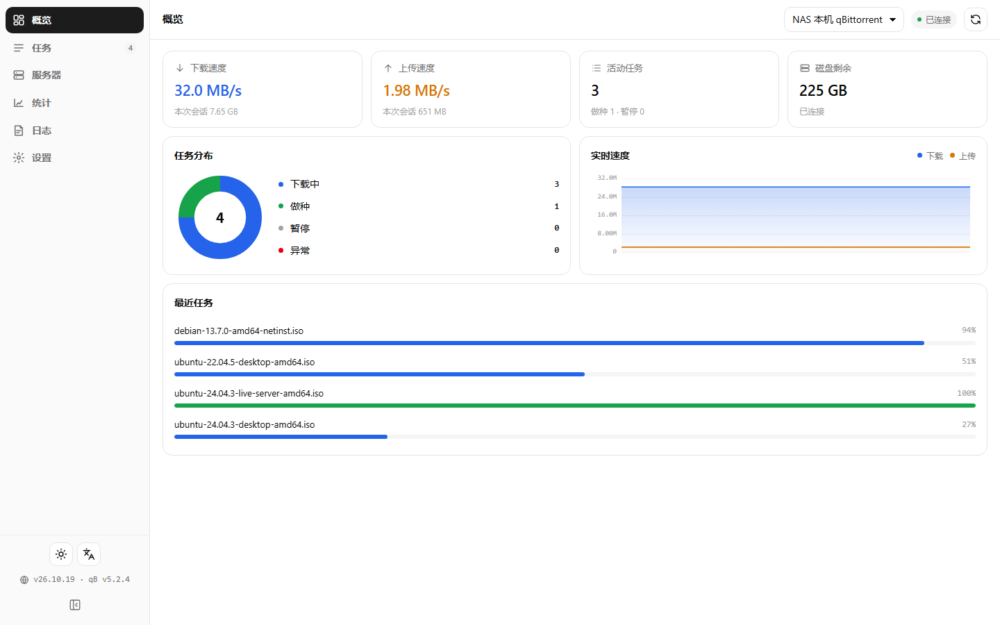
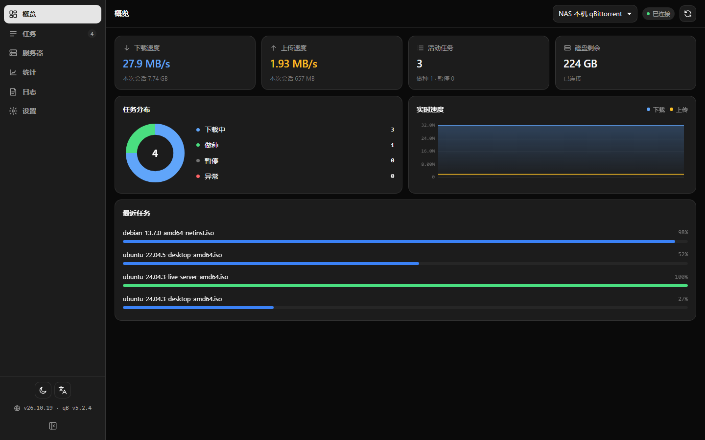
03安装
前置条件：一台飞牛 fnOS 设备（x86 或 ARM 均可），以及一个能访问到的 qBittorrent 或 Transmission 实例。
方式一：应用中心手动安装（推荐）
- 下载安装包到项目的 Releases 页面下载最新的
fn-qbpanel-<版本>-fnos-all.fpk。 - 手动安装飞牛 fnOS → 应用中心 → 手动安装，选择刚下载的 fpk 文件。
- 设置端口安装向导会询问面板端口，默认
8898，被占用时换一个。 - 打开面板飞牛桌面会出现 qBpanel 图标；也可以直接用
http://设备IP:8898访问。
方式二：命令行安装
# 把 fpk 传到设备上后执行
printf 'wizard_backend_port=8898\n' > /tmp/qbpanel.env
sudo appcenter-cli install-fpk -e /tmp/qbpanel.env /path/to/fn-qbpanel-26.10.26-fnos-all.fpk-e），否则会报
Something wrong with environment variables；另外
install-fpk 不会覆盖已安装的同名应用，升级前需要先执行
appcenter-cli uninstall fn-qbpanel。
安装位置
| 内容 | 路径 |
|---|---|
| 程序 | /usr/local/apps/@appcenter/fn-qbpanel |
| 配置与日志 | /usr/local/apps/@appdata/fn-qbpanel（config.json 保存服务器与设置） |
| 应用文件夹 | /vol1/@appshare/fn-qbpanel/（备份默认落在其中的 backups/） |
04快速上手
- 添加下载器打开面板 → 左侧「服务器」→「添加服务器」，填入名称、类型、地址与账号密码。
- 先测一下点「测试连接」，成功会显示下载器版本；保存后面板还会自动再测一次。
- 设为当前面板所有页面都作用于「当前服务器」，也可以在顶栏下拉里随时切换。
- 开始使用回到「概览」看速度，去「任务」加种子、批量操作。
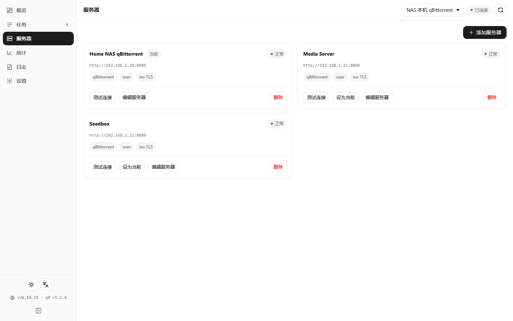
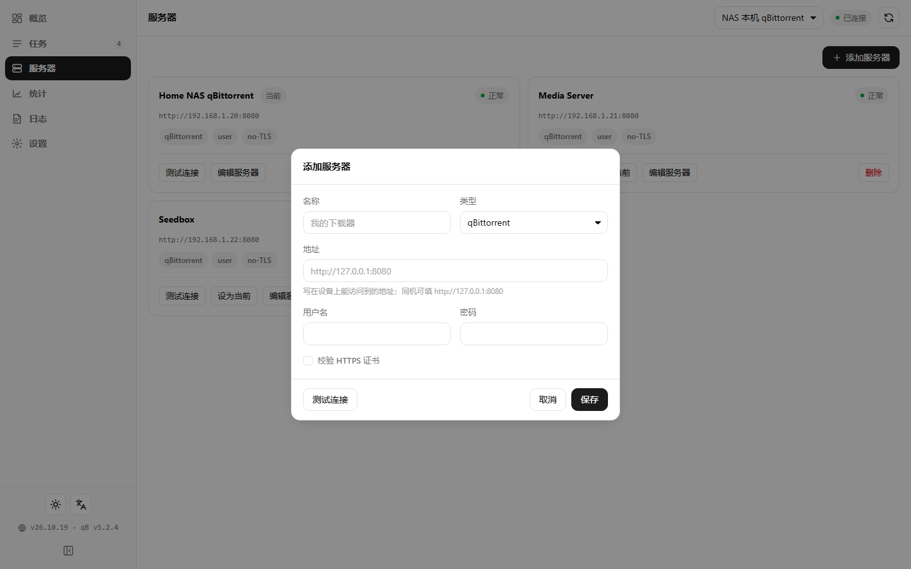
http://127.0.0.1:8080；在另一台机器上就填局域网 IP，
例如 http://192.168.1.20:8080。
05使用手册
总览与任务
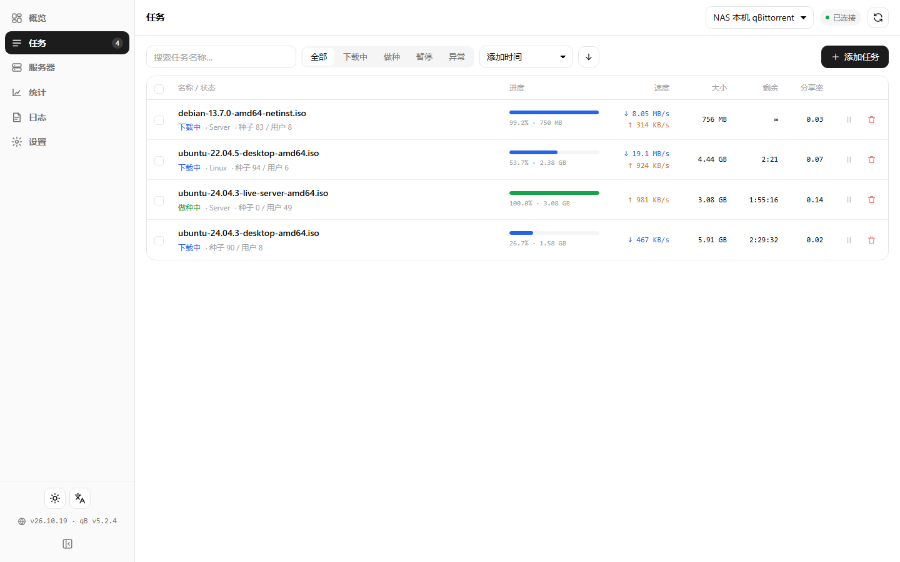
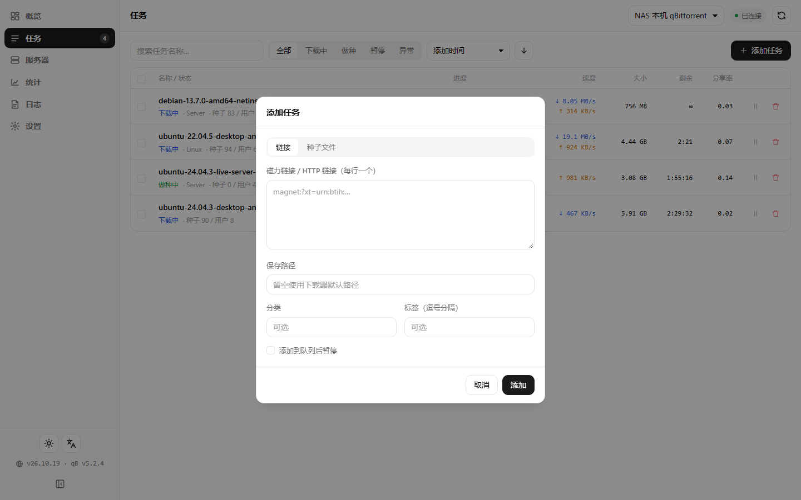
- 搜索与筛选：按名称搜索；筛选「全部 / 下载中 / 做种 / 暂停 / 异常」。
- 排序：名称、大小、进度、下载速度、上传速度、分享率、剩余时间、添加时间。
- 批量操作：勾选任务后出现暂停、恢复、重新校验、限速、删除（可同时删除数据文件）。
- 单个任务限速：对选中任务单独设置下载 / 上传上限，单位为 kB/s 或 MB/s，填 0 表示不限。
任务详情
点任务名从右侧滑出详情抽屉，四个标签页分别是：
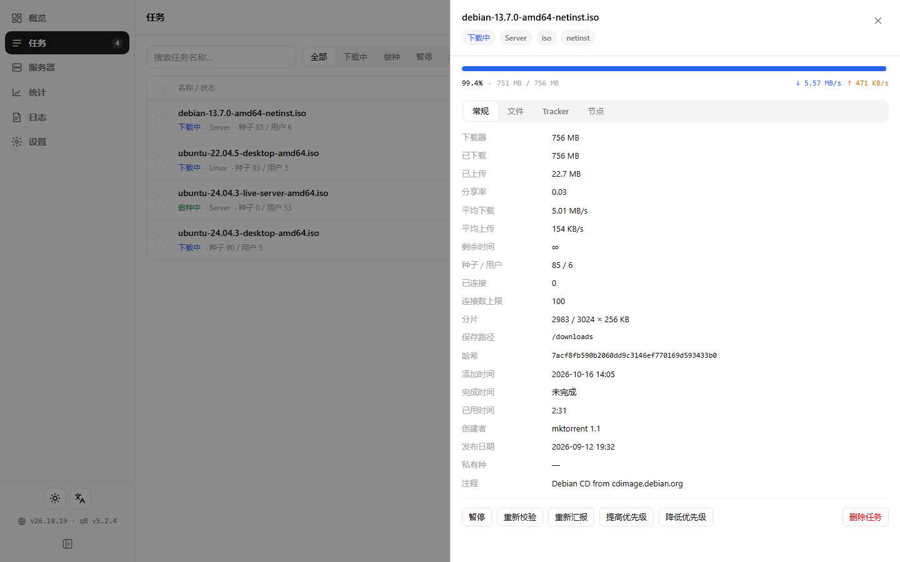
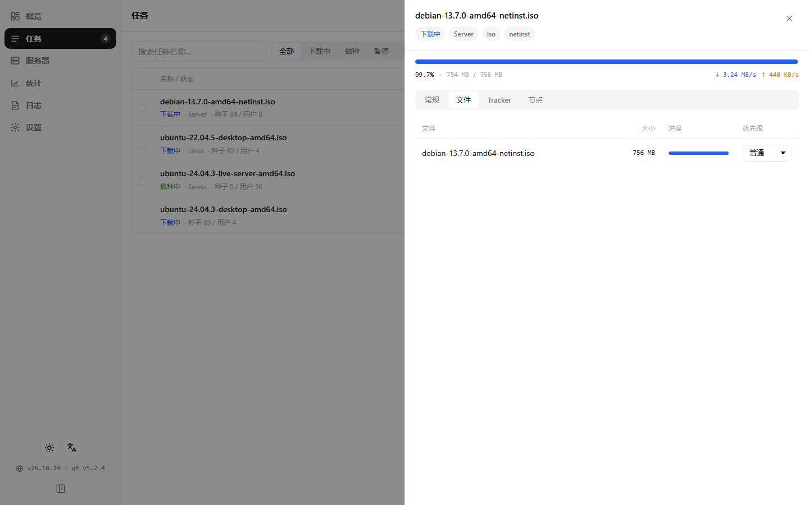
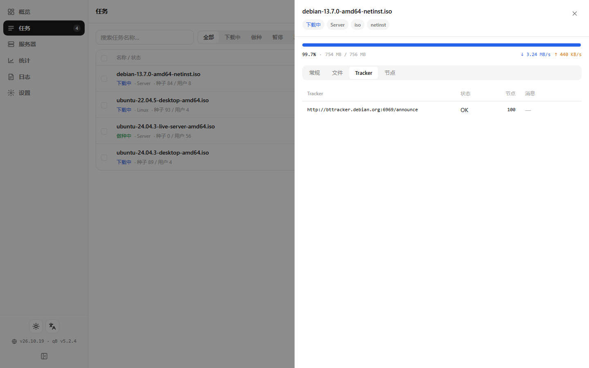
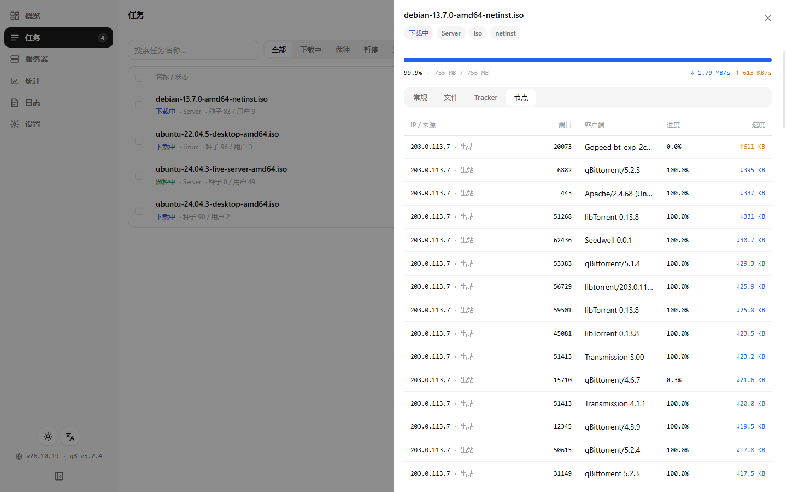
统计 / 日志 / 设置
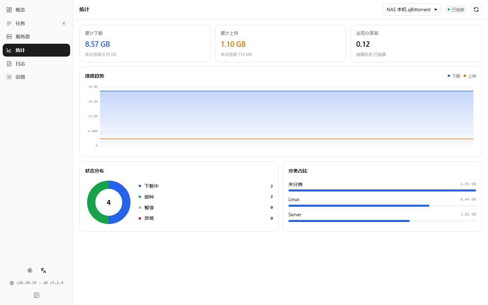
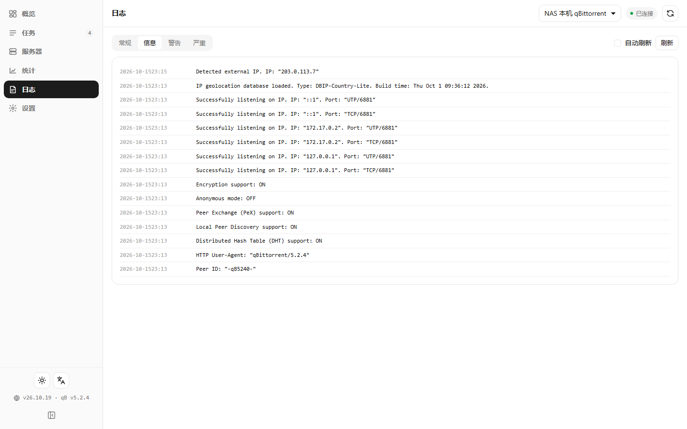
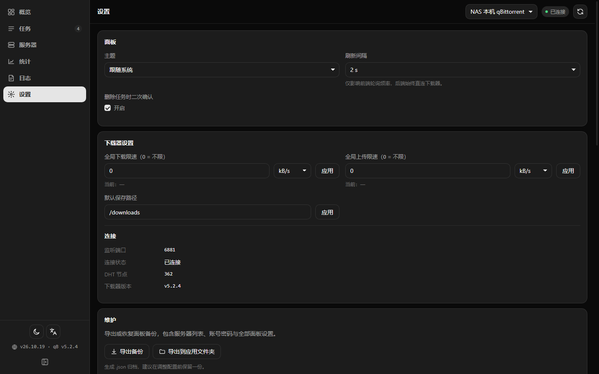
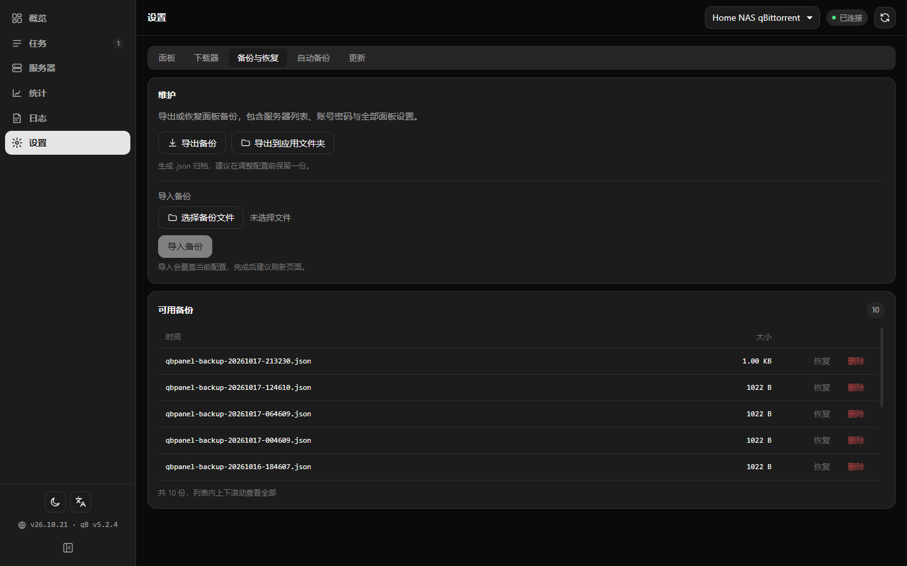
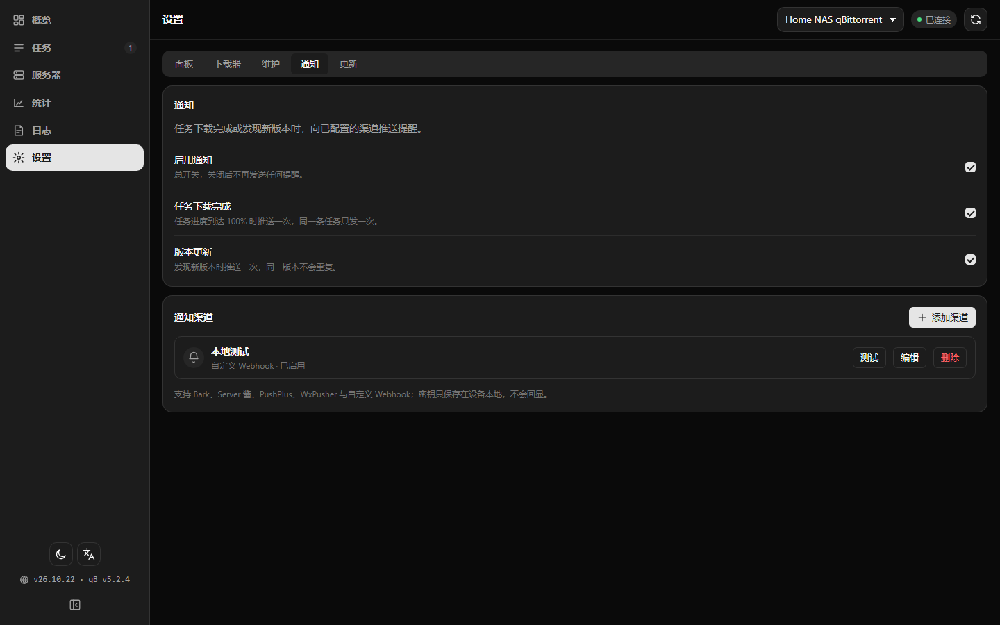
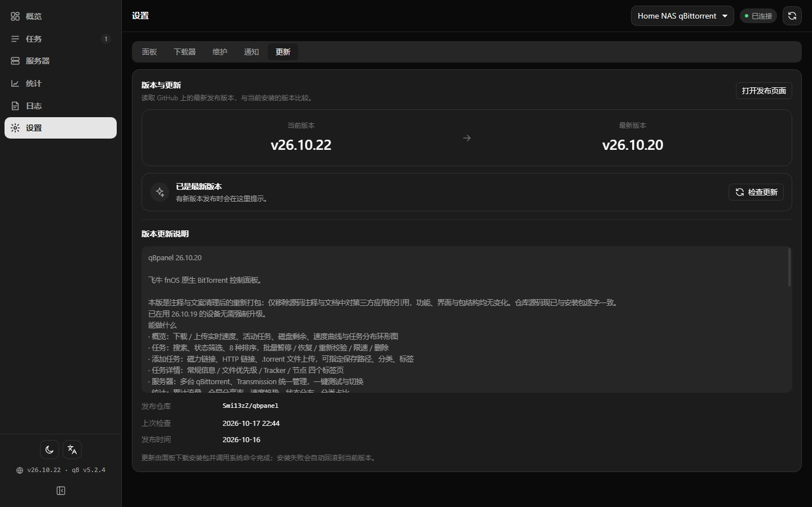
| 页面 | 能做什么 |
|---|---|
| 服务器 | 添加 / 编辑 / 删除下载器，测试连接，设为当前，顶栏快速切换；相同地址自动去重 |
| 统计 | 累计上传下载、全局分享率、速度趋势图、状态分布、分类占比、连接信息（端口 / DHT / 版本） |
| 日志 | 查看下载器日志，按级别过滤，开启自动刷新；切换服务器后自动换成该服务器的日志 |
| 设置 | 分区工作条切换五组配置：面板（主题三态 / 中英切换 / 刷新间隔 / 删除二次确认）、下载器（全局限速 kB/s 或 MB/s、默认保存路径、连接信息）、维护（备份与恢复 + 自动备份 + 历史备份）、通知（渠道与提醒事件）、更新 |
通知
「设置 → 通知」里配置提醒：先在「通知渠道」里点「添加渠道」，选择 Bark、Server 酱、PushPlus、WxPusher 或自定义 Webhook，填好对应凭据即可；添加后可以点「测试」立刻验证是否送达。密钥只保存在设备本地，保存后不会回显。
提醒事件各有开关：任务下载完成（进度到 100% 时推送一次，同一条任务只发一次）、版本更新（发现新版本推一次，同一版本不重复）。
投递记录：渠道卡片下面会列出每一次推送，成功失败都记一条，写明渠道、事件（下载完成 / 版本更新 / 测试）、时间、推送的标题与正文；失败还会附上原因，例如 HTTP 状态码、超时或目标拒绝连接。可以按「全部 / 成功 / 失败」筛选，也能手动刷新或清空。记录只存在设备本地（notify-log.json），最多保留最近 200 条，不含任何渠道密钥。
版本更新
面板启动后会查询一次项目发布页上的最新版本，并按需手动刷新。发现新版本时，侧栏的「设置」会打一个小红点，并且每个页面顶部都会出现提示条，可以直接点「一键更新」。
「更新」分区用「当前版本 → 最新版本」对比展示，下面有状态条、完整更新说明与发布时间。点「一键更新」后面板会下载对应的 .fpk、调用系统安装器完成安装，页面会等待新版本上线后自动刷新；若新版本启动失败，会自动回滚到上一版本。
检查更新走 GitHub 发布页：接口被限流（HTTP 403）时自动改用发布订阅源与资源列表，仍能拿到版本号、更新说明和安装包。若设备完全访问不了 GitHub，这一项会显示失败原因，其他功能不受影响。
06备份与恢复
服务器列表、账号密码、所有面板设置都能整体备份：
| 操作 | 说明 |
|---|---|
| 导出备份 | 生成 .json 归档下载到本机；手机端会交给系统下载器 |
| 导出到应用文件夹 | 直接写入 NAS 的 /vol1/@appshare/fn-qbpanel/backups/，从文件管理器即可取走 |
| 导入备份 | 选择备份文件覆盖当前配置，导入后自动刷新 |
| 自动备份 | 间隔 1–8760 小时、保留 1–3650 天，开启瞬间先生成第一份 |
| 历史备份 | 固定显示五行，更多时在卡片内上下滚动（表头固定）；每行可恢复或删除，手机端省掉共用的文件名前缀只留时间戳 |
07手机端
在飞牛手机 App 里打开会自动切换为移动布局；浏览器访问时屏幕宽度小于 640px 也一样。
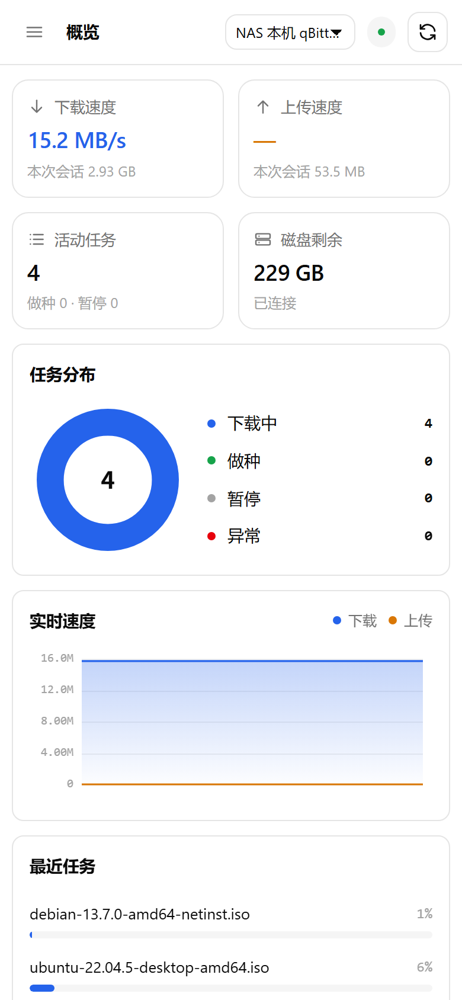
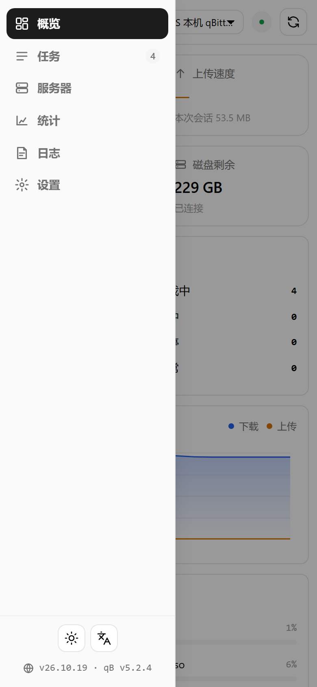
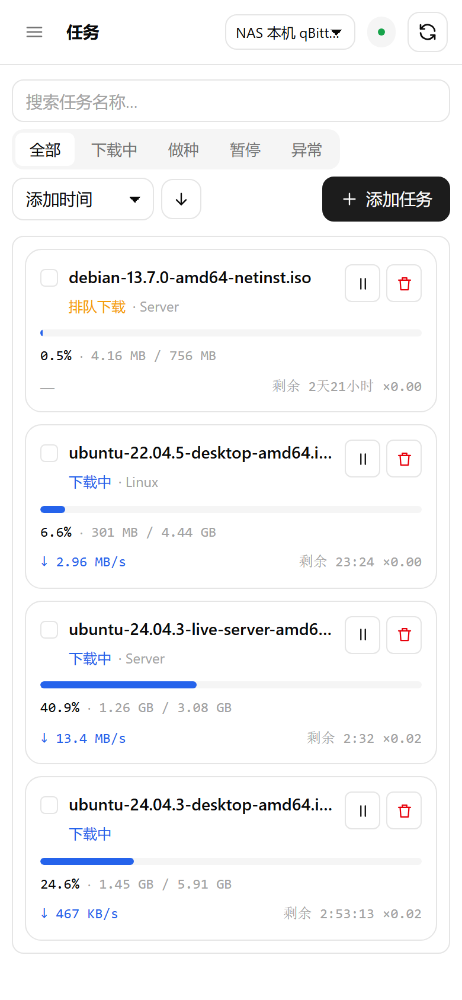
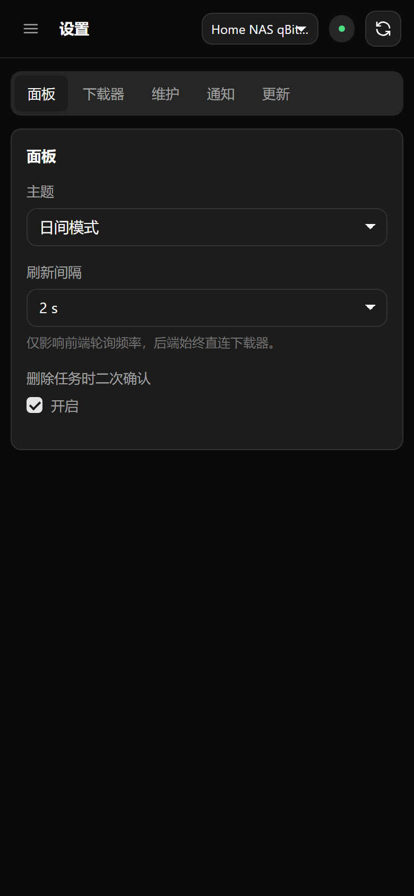
- 侧栏收进左上角菜单，下拉框变成底部选择器，弹窗改为顶部锚定；
- 整页禁用长按选择与点击蓝色高亮，滑动更接近原生手感；
- 任务卡片标题单行省略，长种子名不会撑破布局。
08深链参数
| 参数 | 取值 | 作用 |
|---|---|---|
view | dashtorrentsserversstatslogssettings | 直接打开指定页面 |
theme | darklightsystem | 强制主题（不写入设置） |
lang | zhen | 强制界面语言 |
hash | 任务哈希 | 打开任务页并展开该任务详情 |
http://设备IP:8898/?view=torrents&theme=dark&lang=en09支持的下载器
| 下载器 | 协议 | 说明 |
|---|---|---|
| qBittorrent | WebAPI v2 | 4.x 与 5.x 都已适配：5.x 的登录返回码、会话 cookie 名称、暂停 / 恢复端点与状态名变化全部兼容 |
| Transmission | RPC | 由后端做一层翻译，前端只面对一种数据格式；分类取第一个标签，优先级取队列位置 |
10常见问题
面板打不开 / 端口被占用？
换一个端口：在应用设置里修改后服务会重启并应用；也可以在安装时直接指定。
提示连接失败，但我在电脑上能打开 qBittorrent？
地址要以面板所在设备的视角来填。同一台机器用 http://127.0.0.1:8080，另一台机器用局域网 IP。
怎么修改面板端口？
飞牛应用中心 → qBpanel → 设置，向导里改端口，保存后自动重启服务。
数据与备份存在哪？
配置：/usr/local/apps/@appdata/fn-qbpanel/config.json；备份：/vol1/@appshare/fn-qbpanel/backups/。
Transmission 的分类和优先级为什么和 qBittorrent 不一样？
Transmission 协议本身没有分类字段，面板取第一个标签作为分类、队列位置作为优先级。
11安全提示
- 下载器账号密码只保存在设备本地配置文件，不会写入网页、不经过任何外部服务；
- 导出的备份文件包含明文凭据，请妥善保管；
- 面板不代理下载流量，仅转发控制指令。